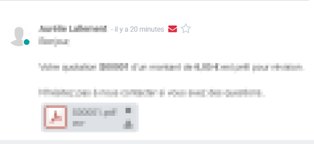
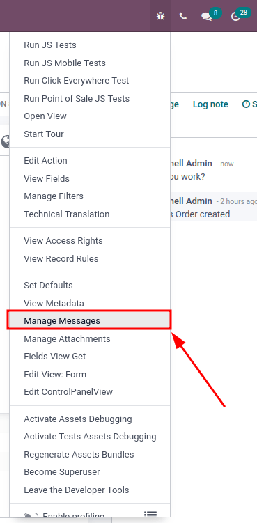

Problemas con el correo electrónico¶
Este documento contiene una explicación de los problemas más recurrentes con el correo electrónico en Odoo.
Correos electrónicos salientes¶
El correo electrónico no se envía¶
El primer indicador que muestra que un correo electrónico no sale es la presencia de un icono ✉️ (sobre) rojo, junto a la fecha y hora del mensaje, ubicado en el chatter.
Los correos electrónicos que no se han enviado también aparecen en la cola de correo electrónico de Odoo. Habilite el modo de desarrollador, desde allí podrá acceder a la cola de correo electrónico en la aplicación . Los correos electrónicos no enviados aparecen en color turquesa, mientras que los correos electrónicos enviados aparecen en gris.
Mensajes de error comunes¶
Límite diario alcanzado¶

Cada proveedor de servicios de correo electrónico tiene sus propios límites de envío, estos pueden ser por día, por hora o incluso por minuto. Lo mismo sucede con Odoo, que limita el envío de un cliente para evitar que los servidores de correo electrónico de Odoo se incluyan en listas de exclusión.
A continuación se describen los límites predeterminados para bases de datos nuevas:
200 correos electrónicos por día para las bases de datos de Odoo en línea y Odoo.sh con una suscripción activa.
20 correos electrónicos por día para bases de datos con una sola aplicación gratuita.
50 correos electrónicos por día para bases de datos de prueba.
En caso de migración, el límite diario podría restablecerse a 50 correos electrónicos por día.
Si alcanza el límite diario:
Póngase en contacto con el equipo de soporte de Odoo, que puede aumentar el límite diario según los siguientes factores:
El número de usuarios en la base de datos.
Las aplicaciones instaladas.
La tasa de devoluciones, es decir, el porcentaje de direcciones de correo electrónico que no recibieron sus correos. Un servidor de correo no permitió que llegaran a su destinatario final.
Utilice un servidor de correo electrónico saliente externo que sea independiente del límite de correos de Odoo (consulte la documentación sobre correo electrónico correspondiente).
Espere hasta las 11 p. m. (UTC) para que el límite diario se restablezca y vuelva a intentar enviar el correo electrónico. En el modo de desarrollador, vaya a la aplicación , luego haga clic en el botón Volver a intentar junto a un correo electrónico no enviado.
Advertencia
El límite de correos electrónicos toma en cuenta todo lo que ocurre en la base de datos. De forma predeterminada, cualquier mensaje interno, notificación, nota registrada, etc. cuenta como un correo para el límite diario si notifica a alguien por correo electrónico. Puede mitigar esta opción mediante la recepción de notificaciones en Odoo, en lugar de correos electrónicos.
Errores del SMTP¶
Los mensajes de error de protocolo simple de transferencia de correo (SMTP) explican por qué un correo electrónico no se envió de forma adecuada. El SMTP es un protocolo para describir la estructura del correo electrónico y transmitir el mensaje a través de internet. Los mensajes de error que los servicios de correo electrónico generan son herramientas útiles para diagnosticar y solucionar problemas de correo electrónico.
Example
Este es un ejemplo de un error de entrega permanente SMTP 554: 554: error de entrega: Lo sentimos, su mensaje a ------@yahoo.com no se puede entregar. Este buzón está desactivado (554.30). - mta4471.mail.bf1.yahoo.com --- Debajo de esta línea hay una copia del mensaje.
El menú de depuraci√≥n es útil para investigar los problemas de env√≠o de SMTP desde una base de datos. Para acceder al menú, debe habilitar el modo de desarrollador. Una vez activado, vaya al en la parte superior derecha de la barra de menús (el icono üêû (representado con un insecto) ), .
El menú Administrar mensajes abre una lista de todos los mensajes enviados en un registro específico. Dentro de cada mensaje, hay información acerca del envío incluyendo el tipo y el subtipo del mensaje.
También incluye el destinatario del mensaje y si Odoo recibió un mensaje de rebote de un servidor de correo.
Nota
El usuario debe poder ver el chatter en Odoo para que aparezca la opción de menú Administrar mensajes.
Sin error¶
Odoo no siempre podrá proporcionar información sobre el motivo del error. Los diferentes proveedores implementan políticas personalizadas con respecto a los correros devueltos y no siempre es posible que Odoo lo interprete correctamente.
Si es problema frecuente con el mismo cliente o el mismo dominio no dude en contactar al soporte de Odoo para que le ayuden a encontrar el motivo.
Nota
Una de las razones más comunes para que un correo no se envíe con un mensaje de sin error, está relacionado con la configuración SPF y/o DKIM. También, asegúrese de que el alias mail.bounce.alias esté definido en los parámetros del sistemas. Puede acceder a los parámetros del sistema en el modo desarrollador en .
El correo se envío a destiempo¶
Las campañas de correo electrónico se envían a la hora programada con el atraso preprogramado en la base de datos. Odoo utiliza una tarea postergada para enviar correos electrónicos que se consideran como «no urgentes» (boletines como envíos masivos, automatización de marketing y eventos). La utilidad del sistema cron se puede utilizar para programar que ciertas actividades se ejecuten de manera automática en intervalos determinados. Odoo usa esta política para evitar saturar los servidores de correo y, en su lugar, prioriza la comunicación individual. Este cron se llama Correo: administrador de tareas del correo electrónico y puede acceder con el modo de desarrollador desde .

Truco
¿Qué es un cron? Un cron es una acción que Odoo ejecuta en segundo plano para efectuar un código particular para completar una tarea.
Importante
De manera predeterminada, el cron de Correos Masivos se ejecuta cada 60 minutos. Lo puede cambiar a mínimo 5 minutos. Sin embargo, ejecutar una acción cada 5 minutos saturaría la base de datos de Odoo (el sistema se estresa), por lo que no es recomendado. Para editar el cron de correos masivos, seleccione la acción programada Correo: administrador de la fila de correos y proceda a realizar los ajustes necesarios.
Los correos que se consideran urgentes (comunicación de una persona a otra, como órdenes de ventas, facturas, órdenes de compra, etc.) se envían de manera inmediata.
Correos electrónicos entrantes¶
Cuando hay un problema con los correos entrantes, puede que no haya una instrucción como tal en Odoo. El cliente que envía el correo es quien debe contactar a la base de datos, que recibirá un mensaje de devuelto (casi siempre es el mensaje de error 550: bandeja de entrada no disponible).
El correo electrónico no se recibe¶
El proceso a seguir depende de la plataforma de Odoo en donde esté alojada la base de datos.
Los usuarios de Odoo.sh pueden encontrar sus registros en tiempo real en la carpeta ~/logs/.
Los registros son una colección almacenada de todas las tareas completadas en la base de datos. Solo son una representación escrita, pero completa con marcadores de tiempo de cada acción que se llevó a cabo en la base de datos de Odoo. Esto puede ser útil para rastrear los correos salientes de la base de datos. Si falla en enviarse, también podrá verlo en los registros que indican que un mensaje se intentó enviar varias veces. Los registros mostrarán cada acción en los servidores de correo desde la base de datos.
La carpeta ~/logs/ (a la cual puede acceder desde la línea de comando o en el tablero de Odoo.sh) de una base de datos de Odoo.sh contiene una lista de archivos que contienen los registros de la base de datos. Estos registros se crean todos los días a las 5:00 AM (UTC).
Truco
Los dos días más recientes (hoy y mañana) no están comprimidos, mientras que los más antiguos si lo están para ahorrar espacio. Los nombres de los archivos para hoy y mañana son (respectivamente): odoo.log and odoo.log.1.
Para los días siguientes, las fechas son el nombre de los registros y luego se comprimen. Use los comandos grep y zgrep (para los comprimidos) para buscar por los registros.
Ver también
Para obtener más información acerca de los registros y de como acceder a ellos a través del tablero de Odoo.sh, consulte la documentación de administración.
Para obtener más información acerca del acceso a los registros a través de la línea de comando, consulte la documentación de desarrollador.
Los usuarios de Odoo en línea no tendrán acceso a los registros. Sin embargo, puede contactar al soporte de Odoo si hay algún problemas frecuentes con el mismo cliente o dominio.
Obtenga ayuda de soporte de Odoo¶
Proporcione toda la información que pueda acerca de su problema para que reciba ayuda de forma eficiente. Esta es una lista de lo que puede ser útil al contactar al soporte de Odoo:
Envíe una copia de los encabezados de los correos. El archivo
.EML(o encabezados) del correo es el formato de archivo que contiene toda la información técnica que requiere una investigación. La documentación del proveedor del correo podría explicar como acceder a los archivos/encabezados EML. Una vez obtenidos los encabezados de los correos, agregarlo al ticket de soporte de Odoo es la forma mas eficiente para que el equipo de soporte lo trabaje.Explique a detalle el flujo que sigue normalmente para recibir esos correos en Odoo. Estos son algunos ejemplos de preguntas cuyas respuestas pueden ser útiles:
¿Es un mensaje de notificación de una respuesta que recibe en Odoo?
¿Es un mensaje recibido desde la base de datos de Odoo?
¿Está usando un servidor de correos entrantes o el correo se redirige?
¿Tiene algún ejemplo de un correo que se haya reenviado correctamente?
Responda las siguientes preguntas:
¿Es un problema genérico o es específico de un caso de uso? Si es específico de un caso, ¿de cuál se trata?
¿Funciona como debería? En caso de que utilice Odoo para enviar el correo, el correo devuelto debe llegar a la base de datos de Odoo y aparecer como un sobre rojo.
Nota
Debe configurar el parámetro del sistema de devolución en los ajustes técnicos para que la base de datos reciba correctamente los mensajes que se devuelven. Para acceder a estos ajustes, vaya a .